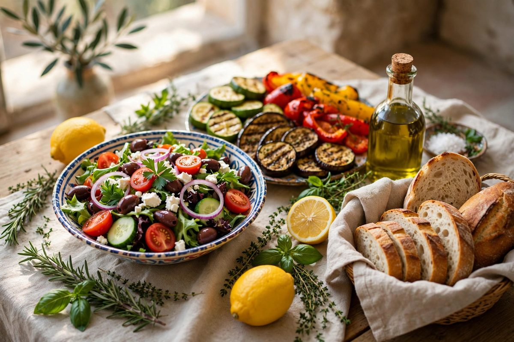

Home » Guides
Mediterranean Diet for Beginners

Starting the Mediterranean diet is one of the easiest dietary changes you can make, because it is not a strict diet with rules and forbidden foods. It is a pattern of eating based on real food, and you can start with a few simple swaps. This guide walks you through the first month, step by step.
Week one: the simple swaps
Start with the easiest changes. Switch your cooking oil to extra virgin olive oil. Add a vegetable to every meal. Eat fruit for dessert instead of cake or biscuits. Drink water instead of fizzy drinks. These four swaps alone move your diet a long way towards the Mediterranean pattern, and they are easy to maintain. Do not try to change everything at once — pick the swaps that feel easiest and build from there. By the end of week one, you will already be eating noticeably differently.
Week two and three: building the pattern
In the second week, add fish twice a week and legumes three times a week. A lentil soup, a chickpea salad, and a bean stew are easy places to start. In the third week, switch to whole grains: wholegrain bread, pasta, and rice. Add nuts as a daily snack, and start using herbs and spices instead of salt. By now, your meals will look recognisably Mediterranean: vegetables, grains, legumes, fish, and olive oil, with fruit for dessert and yoghurt for breakfast.
Week four: making it a lifestyle
In the fourth week, focus on the lifestyle side of the diet. Eat at least one meal a day sitting down, without a screen. Share a meal with family or friends. Walk more, and take a short walk after dinner. Cook at home more often, and try one new Mediterranean recipe each week. The diet is now a habit, not a project. Use the diet score quiz on our home page to see how far you have come, and set a goal for the next month — perhaps more fish, or more home-cooked meals.
Common beginner mistakes
The most common mistake is to think the Mediterranean diet is just pasta and pizza. In the traditional pattern, pasta is a small portion with vegetables, not a large plate with heavy sauce. Another mistake is to pour olive oil without measuring it — it is healthy, but it is calorie-dense. A third mistake is to buy expensive superfoods and supplements, when the diet is built from ordinary foods: vegetables, beans, grains, and fish. Keep it simple, cook at home, and let the pattern build gradually.
Mistakes to avoid in the first month
A few mistakes are common in the first month. The first is trying to change everything at once, which leads to burnout and giving up. The second is buying expensive superfoods and supplements, when the diet is built from ordinary foods. The third is eating too much olive oil, cheese, and nuts, which are healthy but calorie-dense. The fourth is skipping meals, which leads to overeating later. The fifth is treating the diet as a temporary project rather than a new way of eating. Avoid these five mistakes, and the first month will be enjoyable rather than a struggle. If you slip, note what happened and carry on — a single meal does not define a month.
Frequently Asked Questions
How do I start the Mediterranean diet?
Start with simple swaps: olive oil for cooking, a vegetable at every meal, fruit for dessert, and water instead of fizzy drinks. Add fish and legumes in week two.
Do I need to count calories?
Not usually. The diet is filling and balanced, and most people reach a healthy weight without counting. If weight loss is your goal, watch portions of oil, nuts, and cheese.
Can I follow the Mediterranean diet on a budget?
Yes. Legumes, vegetables, grains, and tinned fish are among the cheapest foods available. Buy seasonal produce and cook at home.